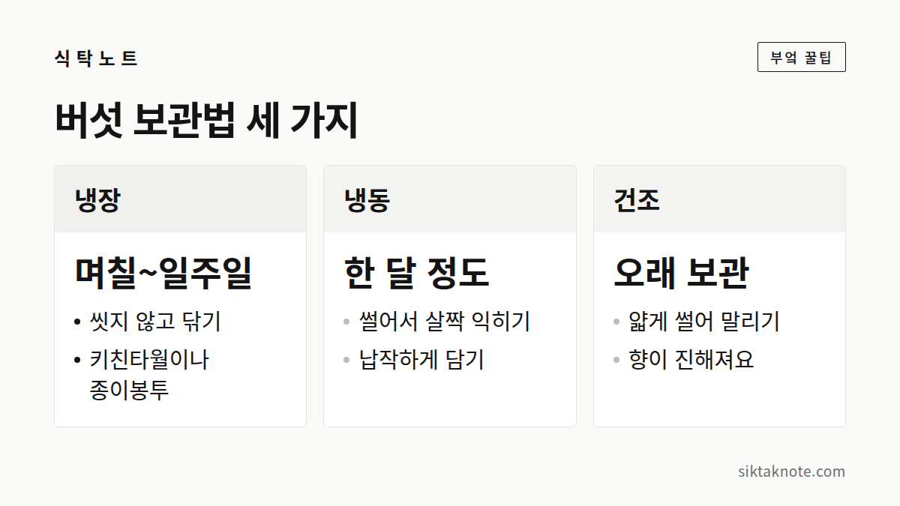

버섯 보관법 — 씻지 말고 냉장, 오래 두려면 냉동·건조

3줄 요약
- 버섯은 씻지 말고 키친타월로 닦아, 종이봉투나 키친타월을 깐 용기에 담아 냉장해요.
- 오래 두려면 먹기 좋게 썰어 살짝 익혀 냉동하거나, 얇게 썰어 말려요.
- 표면이 미끈거리고 시큼한 냄새가 나면 버려야 해요.

버섯은 수분이 많아서 금방 무르기 쉬운 식재료예요. 쓰는 속도에 맞춰 냉장, 냉동, 건조 중에서 고르면 돼요.
며칠 안에 먹을 거라면 냉장
- 버섯을 씻지 말고, 마른 키친타월로 겉의 먼지와 흙만 가볍게 닦아요.
- 용기 바닥에 키친타월을 깔고 버섯을 한 겹으로 담아요. 종이봉투에 담아도 좋아요.
- 뚜껑은 완전히 닫지 말고 조금 열어 두거나, 위에 키친타월을 한 장 덮어요.
- 냉장고 채소칸에 넣어요. 키친타월이 젖으면 새것으로 바꿔 주세요.
마트에서 포장해 파는 버섯은 구멍이 뚫린 포장 그대로 두어도 괜찮아요. 다만 포장 안에 물기가 맺혔다면 키친타월로 닦아 주세요.
표고처럼 갓이 큰 버섯은 갓 안쪽 주름에 이물질이 끼기 쉬워요. 닦을 때 주름이 상하지 않게, 마른 키친타월이나 부드러운 솔로 털어내듯 살살 닦아 주세요. 버섯끼리 포개거나 위에 무거운 걸 올려 두면 눌린 자리부터 물러지니 한 겹으로 넓게 담는 게 좋아요.

씻지 않는 데는 이유가 있어요
버섯은 겉이 스펀지처럼 물을 잘 머금어요. 물에 씻어 두면 보관하는 동안 물이 배어서 더 빨리 무르고 미끈거리고요. 그래서 보관할 때는 씻지 말고, 먹기 직전에 필요한 만큼만 닦거나 살짝 헹구는 게 좋아요.
헹굴 때는 물에 담가 두지 말고, 흐르는 물에 가볍게 씻거나 젖은 키친타월로 닦아 주세요. 씻은 버섯은 물기를 털어 바로 조리하는 게 좋아요.

색이 변했다고 모두 상한 건 아니에요
양송이처럼 하얀 버섯은 자르거나 눌리면 갈색으로 변해요. 공기와 닿아서 산화되는 경우가 많아서, 색이 변했다는 이유만으로 상했다고 보지는 않아요. 냄새도 멀쩡하고 단단하다면 익혀 먹을 수 있는 경우가 많아요.
하지만 표면이 미끈거리거나, 시큼한 냄새가 나거나, 만졌을 때 물컹하다면 색과 상관없이 버려야 해요. 애매하면 버리는 게 안전해요.
오래 두려면 익혀서 냉동
- 먹기 좋은 크기로 썰어요. 표고는 기둥을 떼고 썰어요.
- 팬에 기름 없이 살짝 볶거나, 끓는 물에 잠깐 데쳐요. 익혀서 얼리면 식감이 덜 변한다고 알려져 있어요.
- 식힌 뒤 지퍼백에 납작하게 담아 냉동해요.
- 쓸 때는 해동하지 말고 국이나 볶음에 바로 넣어요.
생으로 얼려도 쓸 수는 있어요. 다만 해동하면 물이 많이 나오고 식감이 부드러워져요.
냉동한 버섯은 한 달쯤 안에 쓰는 게 좋아요. 한 번에 쓸 만큼씩 나눠 담고 날짜를 적어 두세요. 여러 종류를 섞어 얼려 두면 전골이나 볶음에 한 줌씩 꺼내 쓰기 편해요. 떼어 낸 표고 기둥은 질기니 따로 모아 두었다가 국물을 낼 때 같이 넣으면 돼요.
향이 진해지는 건조
- 버섯을 얇게 썰어요.
- 채반에 겹치지 않게 펴서, 볕이 잘 드는 곳에서 바싹 말려요.
- 완전히 마르면 밀폐 용기에 담아 서늘한 곳에 둬요.
마른 버섯은 물에 불려서 쓰면 돼요. 불린 물은 국물 맛을 내는 데 써도 좋고요.
얇게 썰수록 빨리 마르고, 덜 마른 채 밀폐하면 안에서 곰팡이가 필 수 있어요. 비 오는 날이나 습한 날은 피하고, 건조기가 있다면 써도 좋아요. 불린 물을 쓸 때는 바닥에 가라앉은 이물질이 딸려 오지 않게 윗물만 조심스럽게 따라 내세요.
이런 버섯은 먹지 않아요
표면이 미끈거리고 시큼한 냄새가 나거나, 검게 변하며 물렁해졌다면 버리세요. 밀폐 용기에 꽉 닫아 두는 것도 피하는 게 좋아요. 안에 습기가 차서 더 빨리 상하거든요.
이 글은 시장이나 마트에서 파는 식용 버섯 기준이에요. 산이나 들에서 딴 버섯은 전문가에게 확인받지 않고 먹지 마세요. 독버섯은 색이 화려한지, 세로로 찢어지는지, 벌레가 먹었는지, 은수저가 변하는지 같은 걸로는 구별할 수 없다고 여러 기관에서 알리고 있어요. 이런 말은 믿지 마세요.
자주 묻는 질문
마른 버섯이 눅눅해졌어요.
습기를 먹은 거예요. 곰팡이나 이상한 냄새가 없다면 다시 바싹 말려서 밀폐 용기에 담아 두세요. 곰팡이가 보이거나 냄새가 이상하면 버리는 게 안전해요.
해동한 버섯을 다시 얼려도 되나요?
권하지 않아요. 식감이 많이 떨어지고 위생 면에서도 좋지 않아요. 한 번에 쓸 만큼씩 나눠서 얼리면 이런 고민이 없어요.
씻는 건 먹기 직전으로 미뤄 두세요. 그때까지 습기는 키친타월이 맡아 줄 테니까요.